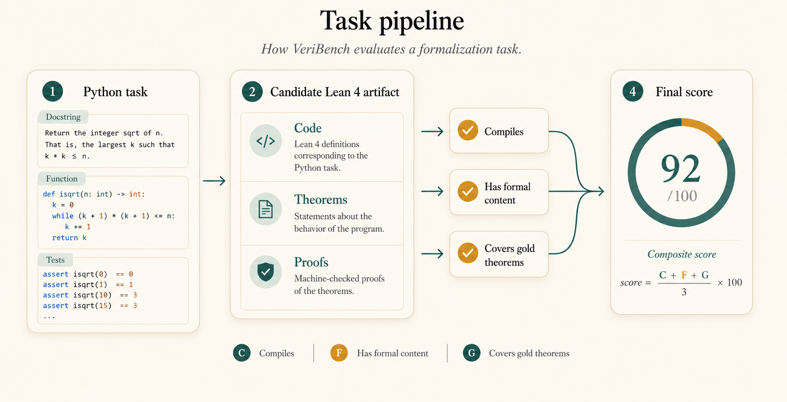
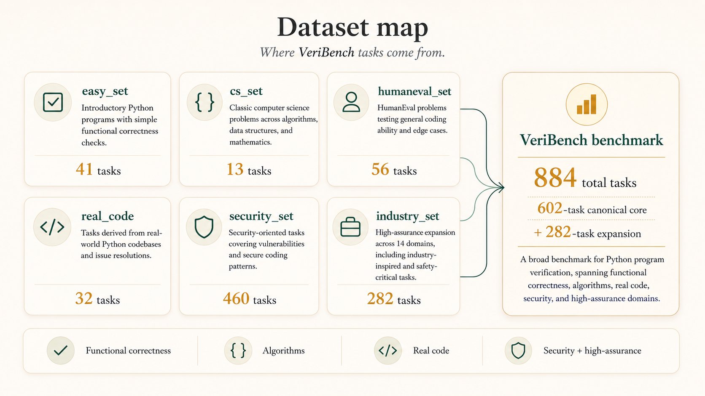

Why This Benchmark Exists
Most coding benchmarks stop at passing tests. HumanEval needed HumanEval+, and SWE-Bench needed SWE-Bench Verified because finite test suites keep missing behaviorally important bugs. A model can pass every available test and still be wrong in ways the benchmark never observed.

Say you're formalizing a simple Python program. An LLM might hand you this Lean artifact:
namespace MyAdd
def myAdd : Nat → Nat → Nat := Nat.add
/-- A couple of tests pass, so this looks promising. -/
example : myAdd 1 2 = 3 := by native_decide
example : myAdd 0 0 = 0 := by native_decide
/-- But the actual semantic claims are left unproved. -/
theorem commutativeThm (a b : Nat) :
myAdd a b = myAdd b a := by sorry
theorem correctnessThm (a b : Nat) :
myAdd a b = a + b := by sorry
end MyAdd
The file compiles. A few tests pass. It has named theorems. But the key claims are
sorry — the actual reasoning was never done.
VeriBench is built to tell apart artifacts that look formal
from artifacts that contain meaningful, checkable verification content.
Our Approach
VeriBench treats autoformalization as an end-to-end verification problem, not just a code-writing problem. Starting from Python, an agent must produce a Lean 4 artifact with code, tests, specifications, and theorem statements that say something real about the program.
This matters because several very different failure modes can all look similar from far away. A model can write Lean that parses. It can even write Lean that compiles. But that still does not mean it captured the right specification, or that its theorems say enough to be useful.
So our evaluation looks beyond text matching. We check whether the file compiles, whether it contains nontrivial formal content, and whether its theorems cover the gold reference specification. When exact comparison is too brittle, we use a human-audited semantic judge to estimate theorem coverage. That gives us a practical way to measure the gap between "looks formal" and "actually says the right thing."
Dataset Breakdown

VeriBench is not a tiny toy set. The full release contains 884 paired Python-to-Lean tasks: a 602-task canonical core plus a 282-task high-assurance expansion. The canonical core spans introductory programs, classical algorithms, HumanEval-style functions, Python standard-library code, and a large security-focused subset.
In the repo, these show up as familiar splits like
easy_set, cs_set,
humaneval_set, realcode_set,
security_set, and the high-assurance expansion splits.
Each Python file is paired with a matching Lean target in a
mirrored directory tree, so the benchmark is easy to inspect and
extend.
Explore The Dataset
Click a task to see real Python source, what makes its formal specification non-trivial, and why a shallow theorem would miss the point.
easy_set: clean benchmark primitives
This split makes it easy to see whether a model can track a straightforward precondition, executable behavior, and a crisp theorem target all at once.
# easy_set/1_MyAdd.py
def pre(a: int, b: int) -> bool:
return a >= 0 and b >= 0
def prog(a: int, b: int) -> int:
return a + bOn top of the canonical core, the release adds a 282-task high-assurance-inspired expansion across 14 domains, including cryptography, aerospace, medical devices, and compilers. The result is a benchmark that mixes small teaching examples with more realistic and security-sensitive code, which gives a clearer view of where current autoformalization agents hold up and where they fail.
What a Gold Lean Artifact Looks Like
Every VeriBench task pairs a Python source file with a hand-curated Lean 4 gold artifact that follows a fixed 9-part schema. Here is a condensed view for the binary search task from the CS set.
-- 1. Implementation (fuelled recursion for totality)
def binarySearch (arr : List Nat) (target : Nat) : Option Nat := ...
-- 2. Unit tests (positive + negative + edge cases)
example : binarySearch [1,2,3,4,5] 3 = some 2 := by native_decide
example : binarySearch [1,2,3,4,5] 6 = none := by native_decide
-- 3. Pre-condition (non-trivial: sorted input required)
def Pre (arr : List Nat) : Prop :=
∀ i j xi xj, i ≤ j → arr[i]? = some xi → arr[j]? = some xj → xi ≤ xj
-- 4. Property theorems (soundness + completeness, proved)
theorem soundness_thm (arr : List Nat) (target idx : Nat) :
binarySearch arr target = some idx → arr[idx]? = some target := ...
theorem completeness_thm (arr : List Nat) (target : Nat) :
Pre arr → (∃ i, arr[i]? = some target) →
∃ idx, binarySearch arr target = some idx := ...
-- 5. Correctness theorem (Pre → Post, bundles all properties)
theorem correctness_thm (arr : List Nat) (target : Nat) :
Pre arr → soundness_prop arr target ∧ completeness_prop arr target := ...
-- 6. Imperative implementation + equivalence theorem
def binarySearchImp (arr : List Nat) (target : Nat) : Option Nat :=
Id.run do ...
theorem equivalence_thm (arr : List Nat) (target : Nat) :
binarySearch arr target = binarySearchImp arr target := by ...The schema separates executable behavior (the implementation and tests), admissible inputs (the pre-condition), atomic proof obligations (the property theorems), and bundled correctness claims. This structure is what makes VeriBench's evaluation partial-credit: even if an agent cannot prove everything, we can measure how much of the schema it recovered.
Gold artifacts are not raw model output — every theorem is written
by a human curator and checked to close without sorry
in the benchmark's Lean 4.22.0 + Mathlib toolchain. The remaining
sorry rate across the gold set is tracked as
D₂ ≈ 0.57 and reported alongside agent scores so
benchmark immaturity does not inflate agent-skill claims.
Paired Safe and Unsafe Security Tasks
The security_6858 split contains 227 paired tasks,
each consisting of a vulnerable and a
safe Python function. The formal specification
must not just describe what the function does — it must capture
the safety condition that distinguishes the two versions.
# VULNERABLE — no bounds check (0_unsafeCopy.py)
def unsafe_copy(dst: bytearray, src: bytearray) -> None:
for i, b in enumerate(src):
dst[i] = b # raises IndexError if len(src) > len(dst)
# SAFE — guards against overflow (0_unsafeCopy_safe.py)
def safe_copy(dst: bytearray, src: bytearray) -> None:
if len(src) > len(dst):
raise ValueError("source longer than destination")
dst[:len(src)] = src
A shallow formalization of safe_copy that only restates
what the function returns will score the same as a formalization of
unsafe_copy. The theorem that actually discriminates is
the safety property:
-- The safety theorem that distinguishes safe from unsafe:
theorem no_overflow (dst src : List Nat) :
safeCopy dst src ≠ none → src.length ≤ dst.length := by ...
-- Wrong implementations that pass all unit tests but fail this theorem:
-- fun dst src => some src (never raises, always "succeeds")
-- fun dst src => if dst.isEmpty then none else some srcThis is why VeriBench measures theorem coverage against a gold reference: the gold file contains the safety property, and any candidate that omits it scores lower, even if it compiles cleanly and passes the unit tests.
How We Built the Dataset
Every task went through a three-stage pipeline: an AI first draft (o3 generates the Lean artifact following the 9-section schema), a human curator review against a written rubric, and Lean kernel compilation. A human must sign off before any task enters the dataset — automation can flag issues, but the final inclusion decision is always human.
The 460-task security split was the most complex to build. The 227 paired safe/unsafe tasks came from MIT 6.858 Computer Systems Security lecture content spanning 20+ topics — buffer overflows, symbolic execution, web security, Spectre, and more. For each lecture, the process identified 2–4 formalizable security concepts and generated both a vulnerable and a safe version, verifying that both model the same underlying mechanism, not just superficially related bugs.
The hardest curation judgment is theorem quality. The most common failure is duplication — two properties with different names but identical statements — and vacuity — theorems that hold for any implementation, not just the correct one. The rubric requires at least three semantically distinct property shapes per task, and this single requirement most often sends a draft back for revision.
How We Score a Solution

The core question in VeriBench is simple: did the agent produce a Lean artifact that both works and says the right things?
In the paper, this shows up as the Smooth Conjunctive Score for Code Verification. The friendly version is: we do not want to give full credit for a file that only clears one hurdle. A strong solution needs to survive several checks at once.
Does the Lean file compile?
First, the generated artifact has to typecheck. If it does not compile, it cannot be a usable verification artifact.
Does it contain real formal content?
We look for actual tests, specifications, and theorem statements, not just a thin wrapper around the implementation or a polished file full of placeholders.
Do the theorems cover the gold reference?
The biggest question is whether the agent's claims match the human-written target. This is where many impressive-looking outputs still fall short.
Human Calibration
Human raters are given the same evaluation guidelines as the LLM judge and asked to score candidate Lean files against gold reference Lean files. We then compare those human scores with the judge's scores to measure how well the judge tracks human judgment.

Theorem coverage (TC1) is estimated by the paper's deployed LLM coverage judge. Separately, a GPT-5.3-Codex CLI rubric check against the human-label pool reaches raw Pearson about 0.61, with weaker rank correlations. We treat this as an alignment audit, not as a claim that the deployed scorer has been fit to human labels.
Results So Far
The short version is that current frontier agents are better at producing Lean files that compile than Lean files that capture the right theorem obligations.
| Agent | Compiles (IC1) |
No-sorry theorem rate (IC2) |
Theorem coverage (TC1) |
Agent skill (S_skill) |
|---|---|---|---|---|
| Codex (GPT-5.4) | 1.000 | 0.237 | 0.102 | 0.289 |
| Claude Code (Sonnet 4.6) | 1.000 | 0.114 | 0.098 | 0.224 |
| Baseline (Sonnet 4.6) | 0.310 | 0.282 | 0.105 | 0.209 |
| Gemini 3-flash preview | 0.206 | 0.043 | 0.156 | 0.111 |
| Leanstral v2 | 0.292 | 0.065 | 0.058 | 0.103 |
On the directly comparable benchmark runs in the paper, Codex leads with an agent-skill score of about 0.29, Claude Code follows at about 0.22, and Leanstral v2 lands at about 0.10. Those are not disaster-level numbers, but they are far from what we would want from an end-to-end formal verification system.
The more interesting pattern is deeper than the ranking itself. Codex and Claude Code can often produce files that typecheck cleanly. In other words, they can generate Lean that looks structurally coherent. But when we ask whether the generated theorem statements actually cover the gold reference, the scores remain strikingly low.
In the paper, overall theorem coverage stays at or below about 0.156 across the evaluated agents, and for the strongest headline agents it stays at or below about 0.105. That means the real bottleneck is not just proof search. It is getting the model to state the right claims in the first place.
Just as importantly, the gold-side quality term stays roughly stable across agents, at about 0.72 to 0.74. That means the ordering is not being driven by one model getting an easier slice of the benchmark. The benchmark can still be imperfect, but the main headline is agent-side: current systems are struggling to formulate theorem sets that really match the intended specification.
The numbers reveal a consistent pattern. All three failure modes below produce Lean files that look plausible — VeriBench's conjunctive score penalizes each differently:
Compiles, sorry everywhere
IC1 = 1, IC2 ≈ 0 — the file typechecks but every theorem is a placeholder. Codex and Claude Code both hit this.
No sorry, but vacuous
IC1 = 1, IC2 = 1, TC1 ≈ 0 — theorems close, but say nothing about the program's actual behavior.
Meaningful theorem, proved
IC1 = 1, IC2 = 1, TC1 high — compiles, closes, and captures the right specification. Rare in practice.
Conclusion
The central finding is a theorem-coverage gap. Frontier agents can compile Lean. They can write tests and produce files that look polished and formal. But they have not yet recovered the key semantic obligations that a human verifier would write down. That gap matters for scalable oversight: as systems scale, humans cannot manually validate every generated artifact, so we need agents that can be trusted to formalize the right properties — not just produce compilable Lean.
VeriBench changes the target of code-verification evaluation. It shifts the conversation away from isolated proof search or test passing and toward end-to-end conjunctive grounding: can an agent start from real source code, produce a structured Lean artifact, and state the right theorem obligations in a form that a checker can actually use?
The next step is not just to build stronger proof search. It is to build agents that formulate better specifications, state better theorems, and improve under human-audited oversight at scale. If VeriBench is useful, it will be because it gives that next generation of verifiable coding agents a concrete target to beat.
Run It Yourself
VeriBench uses Harbor for agentic, containerized evaluation:
agents run inside isolated Docker tasks and are evaluated against
held-out gold artifacts, rather than being given access to the
solutions. The
Colab
tutorial shows how to run the public
veribench@1.1 release.